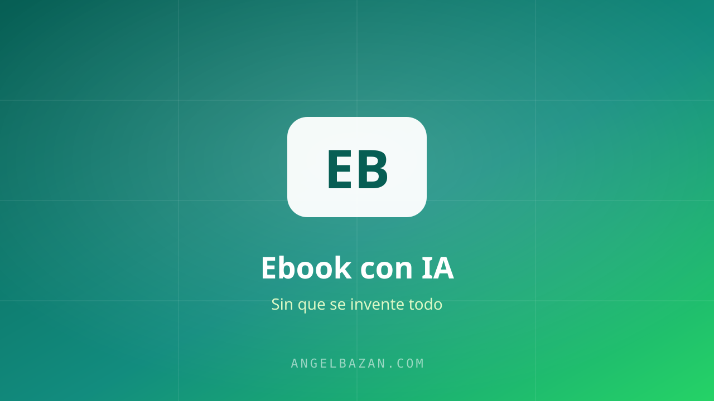

Cómo crear un ebook o producto digital con IA (sin que se invente todo)
Cómo crear un ebook o producto digital con IA de verdad útil: validar el tema, alimentarla con fuentes reales y usar la curación de contenido para que venda.
En este artículo
El ebook es la puerta de entrada clásica al negocio digital: barato de producir, fácil de vender por WhatsApp y escalable con Meta Ads. El problema: si dejas que la IA lo escriba sola, obtienes contenido genérico que nadie paga. Así lo hago yo para que el resultado sea útil y vendible.

La trampa: el ebook que la IA escribe sola
"Pídele a ChatGPT que te escriba un ebook de 50 páginas" suena fácil. El resultado: información de manual, sin casos, sin voz, sin nada que no encuentres gratis en Google. El valor no lo pone la IA: lo pones tú con tu experiencia y tu mercado. La IA es la que escribe rápido; tú eres el que sabe.
Paso 1: valida el tema antes de escribir
Antes de escribir una línea, confirma que el tema se vende:
- Busca en la Biblioteca de Anuncios si hay ofertas similares activas desde hace meses.
- Revisa las preguntas que ya te hicieron por WhatsApp: ese es tu índice real.
- Pregúntale a la IA qué títulos de ebooks ganan en tu nicho — como fuente de inspiración, no como verdad.
Paso 2: alimenta la IA con fuentes reales
La diferencia entre un ebook genérico y uno que vende es el material que le das a la IA:
- Reúne tus notas, tus casos, tus guiones de WhatsApp, tus respuestas a objeciones.
- Sube todo a NotebookLM o pégalo en el chat con contexto.
- Pídele que estructure el ebook usando solo ese material.
Así la IA escribe rápido sobre lo que tú sabes de verdad, y no rellena con generalidades.
Paso 3: cura, no inventes
Tu trabajo no es escribir: es curar y decidir. Revisa cada sección, quita lo genérico, agrega tus ejemplos y verifica los datos (cómo detectar invenciones de la IA). El ebook debe sonar a ti, no a "contenido generado".
Paso 4: prepara el producto para vender por WhatsApp
Un ebook listo para vender incluye su mini-embudo:
- Una portada que comunique el resultado, no el tema.
- Un guion de venta de 5 mensajes para el bot de WhatsApp.
- Un order bump y un upsell (guía aquí).
- Entrega automática por WhatsApp con la plantilla de confirmación.
Con ese sistema, cada clic de Meta Ads puede convertirse en una venta cerrada en conversación, sin que muevas un dedo.

Angel Bazán
Especialista en funnels, Meta Ads y WhatsApp + IA. Ayudo a negocios a vender más combinando tráfico pagado con conversaciones automatizadas.
Conoce más sobre mí →Aprende a crear y vender productos digitales con Meta Ads, WhatsApp e IA
Clases en vivo, estrategias y recursos para construir tu sistema desde cero. 🚀
Únete gratis al grupo